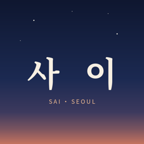
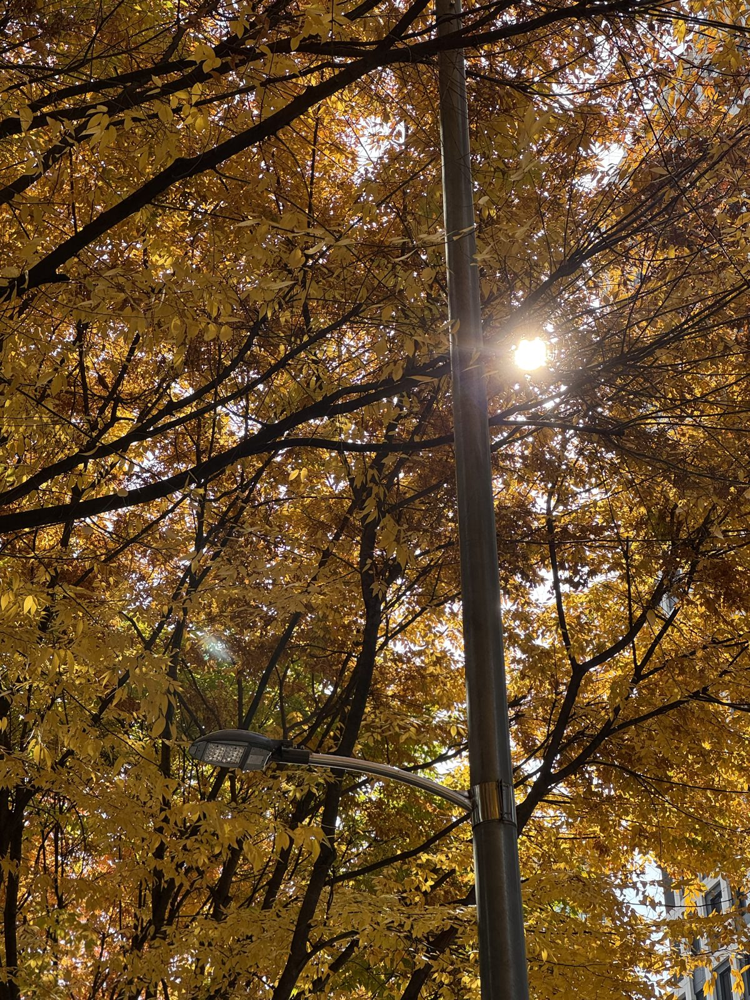
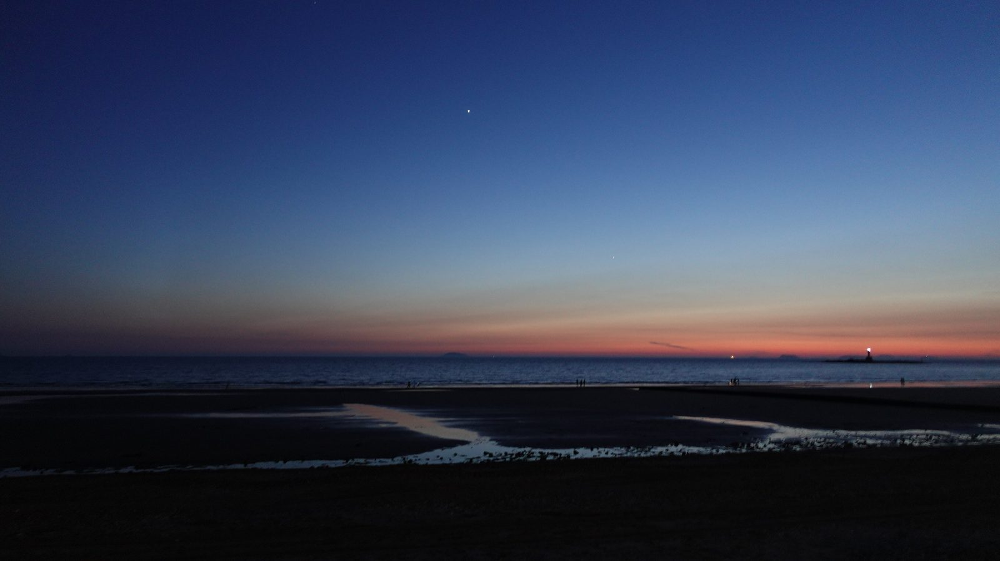
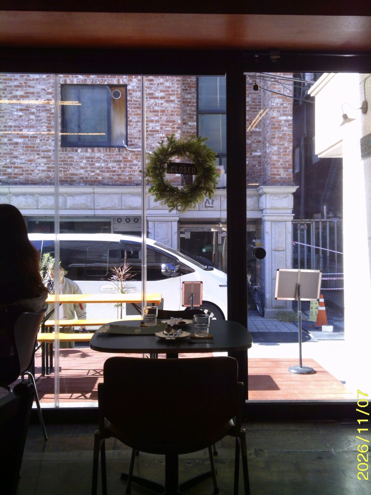
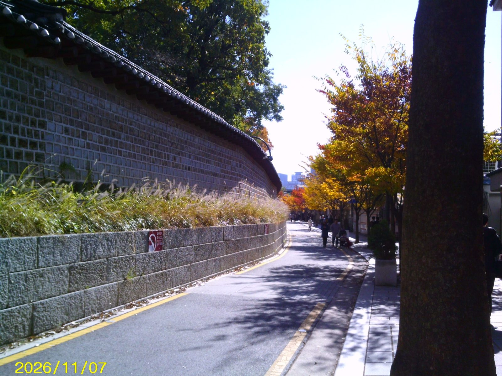
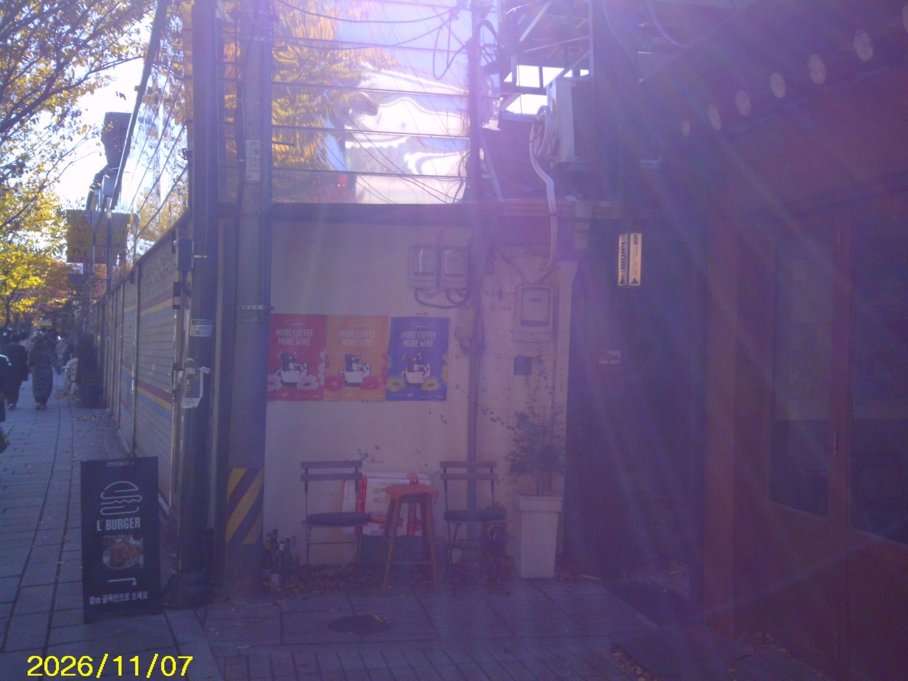
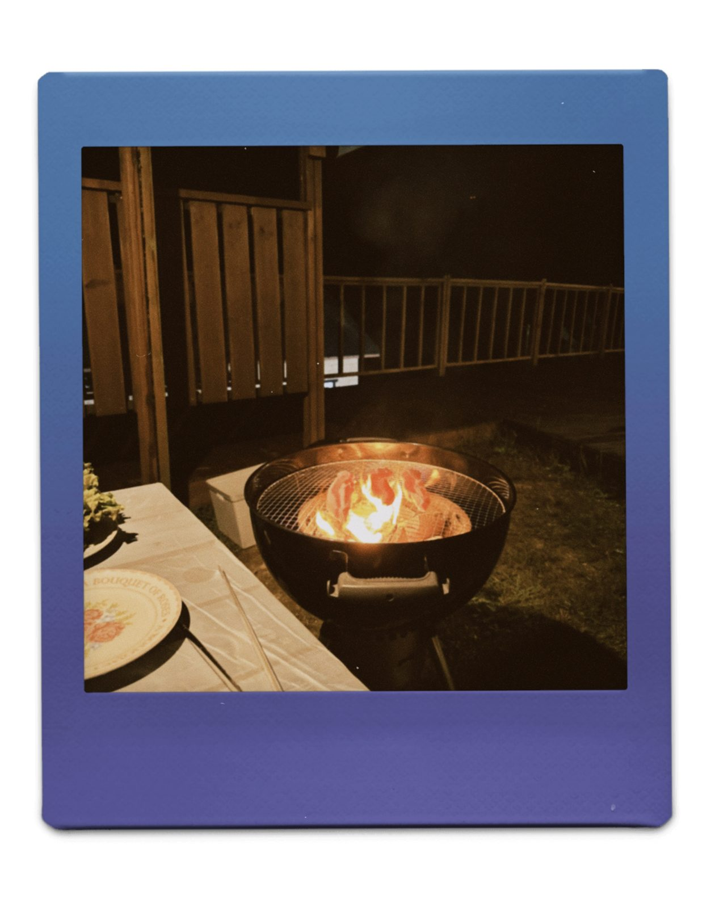

사이서울:쉼마음에 쌓인 이야기를 편하게 꺼내 놓는 소규모 모임

가을, 나뭇잎 사이로 들어오던 햇살
사이서울:쉼은 비슷한 시기를 지나고 있는 분들이 모여, 평소에 쉽게 꺼내지 못했던 이야기를 나누는 모임입니다.
모임은 회차마다 주제가 하나씩 정해져 있고, 마음이 가는 회차를 골라 한 번만 참여하시면 됩니다. 한 회차에는 3~5명이 함께하는 소규모 모임입니다. 같은 고민을 해 본 사람들끼리라 길게 설명하지 않아도 이야기가 통하고, 말하기 어려운 이야기는 듣기만 하셔도 괜찮습니다.

어두워지기 직전의 바다
저는 오랫동안 누군가에게 이해받고 싶었습니다. 그리고 20대를 지나며 결국 인생은 혼자 걸어가는 것이라는 걸 받아들이게 됐어요.
그런데도 살다 보면 누군가와 마음이 통하는 순간이 있습니다. 내 이야기를 누군가에게 털어놓은 것만으로, 누군가 내 이야기를 알고 있다는 것만으로 위로가 되는 날도 있고요.
힘든 일을 모른 척하지 않으면서도, 그 끝에는 좋은 날이 올 거라고 믿고 싶습니다. 각자의 길은 혼자 걸어가야 하지만, 잠시라도 누군가와 같이 걷는 시간이 있다면 그게 큰 힘이 된다고 생각해요. 사이서울:쉼이 그런 시간이 되었으면 합니다.
아래 주제 중 하나로 모임이 열립니다. 처음에는 세 가지 주제로 시작하고, 차례로 늘려 갈 예정입니다.
| 날짜 | 시간 | 주제 |
|---|---|---|
| 11월 22일 (일) | 오후 12:00 ~ 1:50 | 회사 일이나 사람 때문에 지친 분 |
| 11월 22일 (일) | 오후 2:00 ~ 3:50 | 앞으로 무엇을 하고 싶은지 고민 중인 분 |
| 11월 22일 (일) | 오후 4:00 ~ 5:50 | 부모님과의 관계가 어려운 분 |
세 회차 중 원하는 회차 하나를 골라 신청해 주세요. 회차별로 3명 이상 모이면 진행합니다.




조용한 카페에서 음료 한 잔과 함께 이야기를 나눕니다.
| 대상 | 26~35세 |
|---|---|
| 인원 | 회차별 3~5명 (3명 이상 모이면 진행합니다) |
| 장소 | 사당역 근처 카페 (자세한 위치는 입금 확인 후 안내드립니다) |
| 참가비 | 29,000원 (음료 한 잔 포함) |
| 진행 | 간단한 소개, 주제에 맞는 질문으로 이야기 나누기, 마무리 |
| 환불 | 모임 3일 전까지 취소하면 전액 환불됩니다. 최소 인원이 모이지 않아 모임이 열리지 않는 경우에도 전액 환불됩니다. |
Q. 말을 잘 못하는데 괜찮을까요?
괜찮습니다. 질문을 하나씩 드리면서 진행하고, 답하기 어려운 질문은 넘기셔도 됩니다.
Q. 혼자 가도 되나요?
대부분 혼자 오십니다. 지인과 함께 오시면 이야기가 조심스러워질 수 있어서, 각자 신청하시는 걸 권해 드려요.
Q. 이성을 만나는 모임인가요?
아닙니다. 편하게 이야기를 나누는 모임입니다.
Q. 상담을 받는 모임인가요?
전문 상담은 아니고, 비슷한 경험을 가진 분들이 서로의 이야기를 나누는 자리입니다.
지금 많이 힘드시다면 모임을 기다리지 마시고 자살예방상담전화 109(24시간)나 가까운 정신건강의학과에 먼저 연락해 주세요.
사이서울:쉼 | 문의 [인스타그램 또는 이메일]